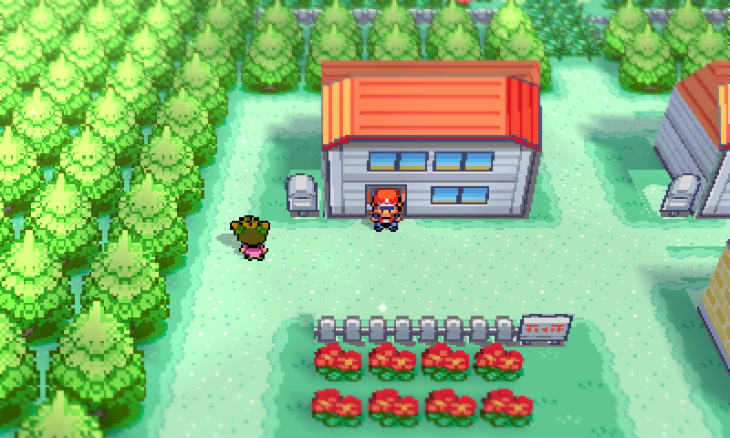
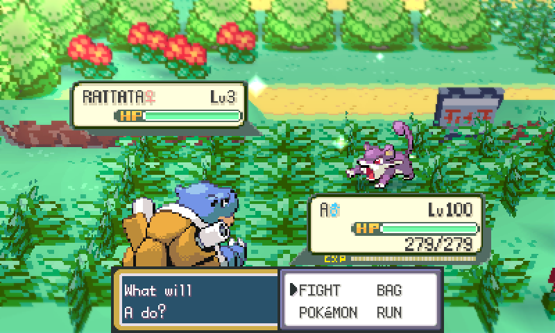
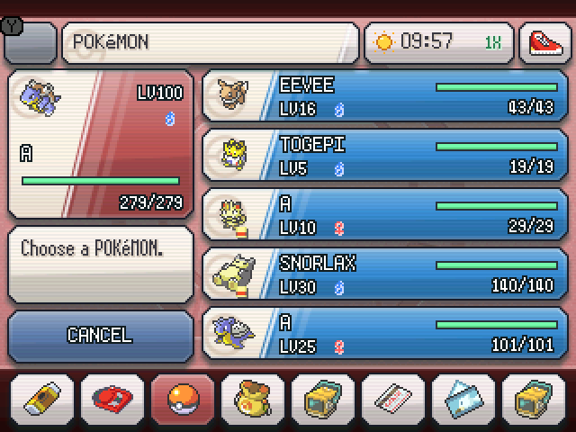
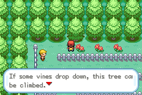

ONE ADVENTURE. TWO WAYS TO PLAY.
Kanto, evolved.
Catch all 251 Gen 1 and Gen 2 Pokémon. Take on the Battle Frontier. Make it your adventure — in classic pixels or voxel 3D.
Loading the current editions…
The classic GBA adventure, expanded.
Choose your FireRed ROM
Use your clean US/English FireRed v1.0 or v1.1. The revision is detected automatically.
Already playing? Move your save between editions.
FROM THE GAME
A new view of a familiar world.

Explore routes, towns and interiors in native 3D.

Fight in a voxel arena with the original battle interface.

Manage your party with the native bottom-screen interface.

Keep the original presentation with the same shared gameplay updates.
Keep your adventure.
Bring your party, storage and progress to the other edition. The save tool includes an untouched backup.
Open save transfer →Get comfortable.
Find the controls, camera options and steps for starting or updating your game.
Read the play guide →Take the patcher offline.
Save verified build files for both editions, the save tool and the guide. Your own clean ROM is still required each time.